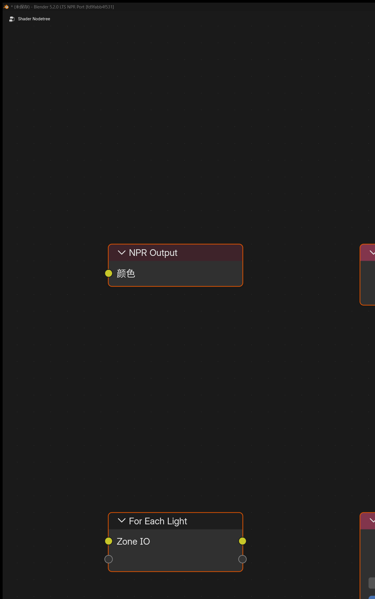

Stylized rendering extensions on Eevee¶
NPR capabilities are grouped into four paths you can start from immediately: Scene pipeline, extended nodes, NPR Tree, and UI controls. The package includes Cycles; this site documents Eevee extensions only.
Pick a working path¶
Grouped by the Blender entry points you actually open — not a flat feature dump.
Module notes¶
01 · Scene
Scene pipeline¶
Build render textures and post graphs at the scene level, instead of forcing the whole chain into one object material.
- Render Textures: scene-level custom render textures
- Filter Graph: four-stage graph with reusable Filter Pass materials
- Camera FX Outputs: native camera-effect output sources
- Eevee Outline: scene-level outline

Filter Graph · viewport + Filter Material
02 · Nodes
Extended shader nodes¶
Nodes for Filter work, screenspace data, object materials, and custom GLSL — from sampling to procedural shaping.
- Filter domain: Object Info, Mask, Scene Color
- General helpers: Render Info, Scene Time, Screen Derivative, Portal
- Object materials: Outline Control, Screenspace Info, World / Probe
- GLSL / procedural: Function, Script Expression, SDF, OKLab

GLSL Function · Node / Code
03 · NPR Tree
NPR Tree workflow¶
Use a dedicated NPR Tree for lighting breakdown, refraction, sampling, and per-light work, plus built-in node-group assets.
- NPR Input: combined / diffuse / specular lighting breakdown
- NPR Refraction: refraction path (including volume-approximation fixes)
- Image Sample: image sampling with offset modes
- For Each Light: per-light loops and light info
- Built-in assets: drop-in NPR node groups

NPR Tree · Input / Refraction / Assets
04 · UI
Interface & production controls¶
Performance attribution, material render state, and light controls live in everyday panels for stylized production debugging.
- Eevee Performance: shadow / probe cost attribution
- Material state: preview, culling, ZTest / Stencil / Write
- Lights: Lightgroup ID, Sun Shadow Map Scale
- Production helpers: splash version tag, IME, pose-bone Outliner visibility

Eevee Performance · Shadow / Probe
Build notes · fd9fabb4f531¶
This stable package focuses on refraction volume, GLSL matrix helpers, shadow detail, and input comfort.
New¶
- EEVEE NPR refraction volume approximation, with sampling/capture isolation and background-leak fixes
GLSL Functiondraw-view matrix helpers (view / projection / model and inverses; see node docs)- Viewport Shadow LOD visualization
- Improved IME support (5.2 API adaptation and text-editor cursor metrics)
Fixed¶
- Refraction-volume Image Sample offset black holes, background misses, depth mapping
- Sun
Shadow Map Scalecorrectly applied to tilemaps - White fallback for unconnected GLSL samplers
- Restored NPR Tree AOV output
- Stabilized Render Texture resource lifetime
Eevee only
The package can run Cycles, but the NPR Port extensions documented here require Eevee.
Windows x64 stable package¶
Windows is the fully validated baseline (110/110). Linux / macOS companion builds ship in the same release with SHA256.